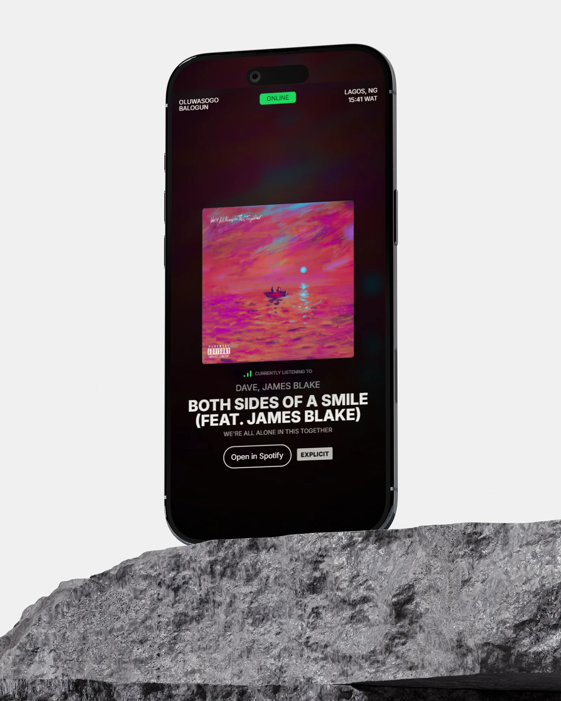
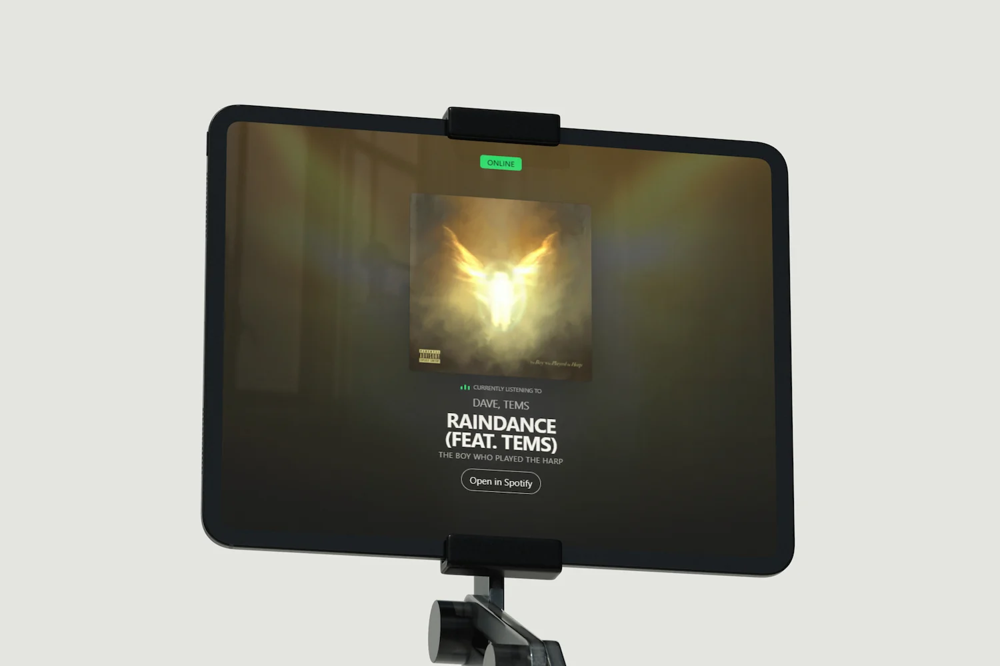
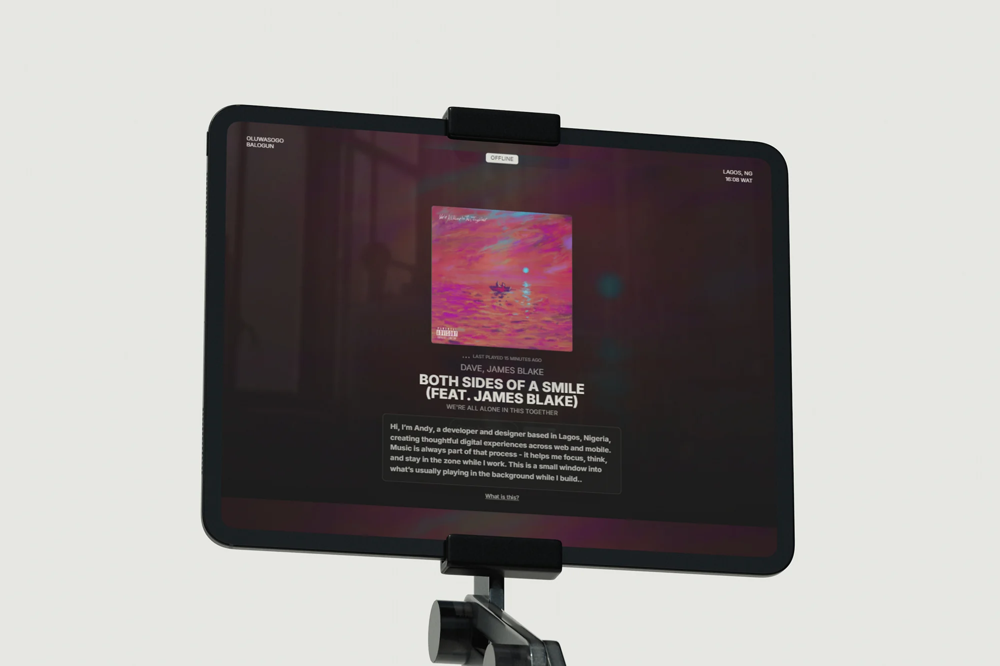
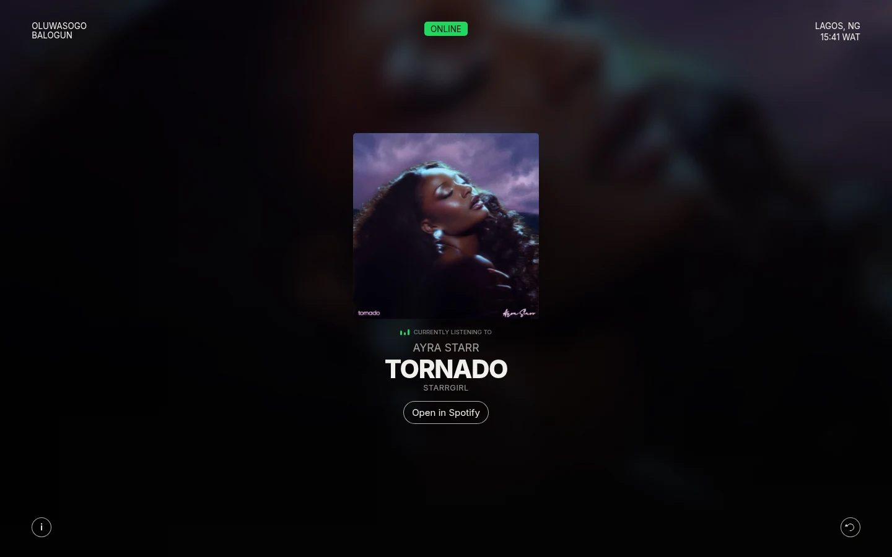
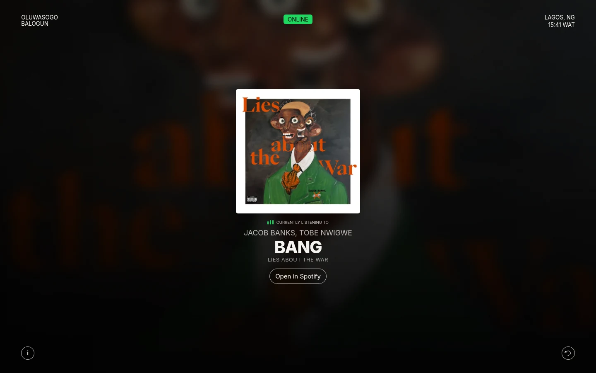
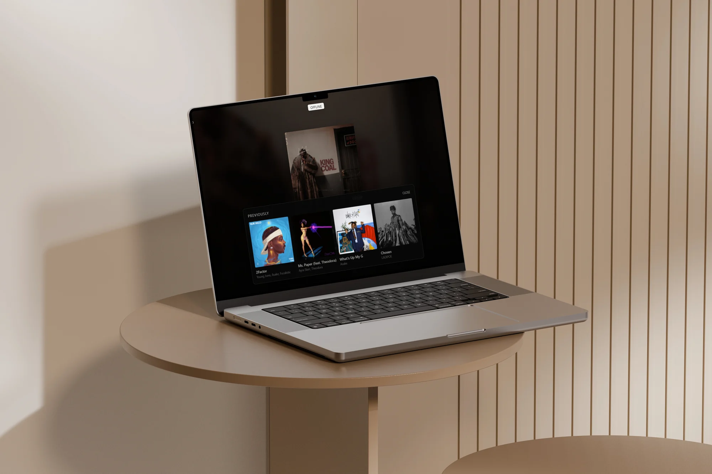
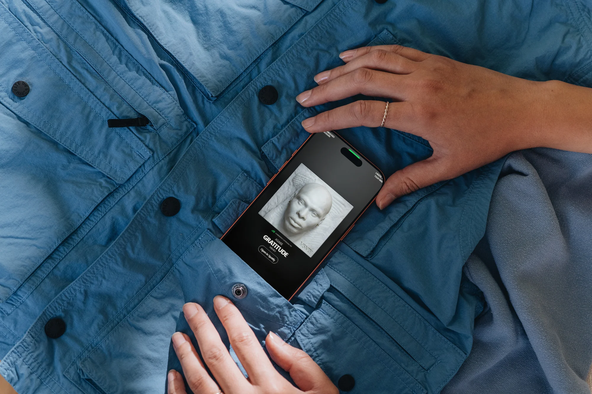
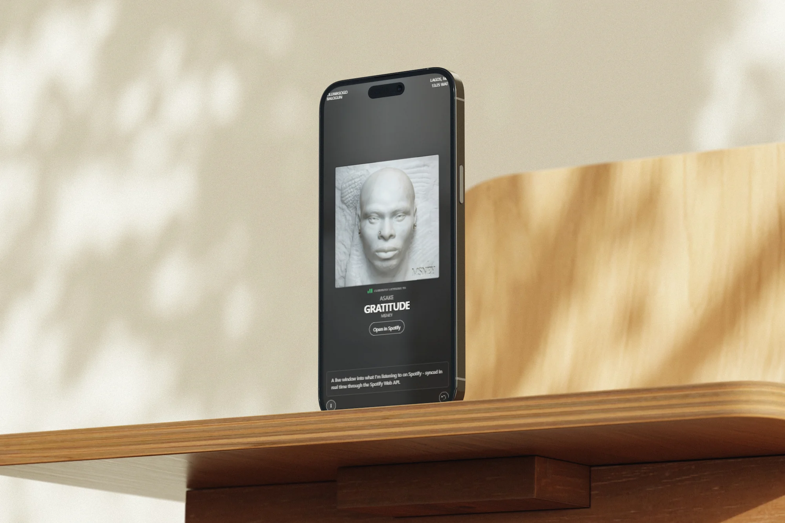

What I’m playing on Spotify, live, on a page that takes its colours from the cover.

Context
Music is part of how I work, so I made a page that shows it as it happens. Now Playing reads my Spotify account and shows the track that’s playing, or the last one if nothing is, with the time in Lagos and a link to open it in Spotify.
The first version, in May 2026, put the cover over a blurred copy of itself, with a short note about the page. At the end of August I rebuilt how it moves: colours taken from the cover, staged track changes, a tilt on the artwork and a list of recent tracks. Touch got a version of its own in late September.

Online, with a track playing.

Offline in the first version, with its note open.
Live data
The page never calls Spotify’s API itself. Every 10 seconds it asks its own endpoint, a serverless function on Vercel that holds the client secret and a long-lived refresh token. The function trades that token for an access token, keeps it until a minute before it expires while the function stays warm, and never lets two requests refresh it at once.
Then it asks Spotify up to three questions and stops at the first answer. Every response is marked no-store, so a track is never served from a cache.
What’s playing
A track that’s playing shows as Online, under “Currently listening to”. A paused one shows as Paused.
Playback state
Spotify can answer the first question with nothing for a session that was just paused, while the playback state still holds the track. This catches it.
Last played
The most recent track, with how long ago it played. The badge reads Offline.
Nothing yet
If the history is empty too, the page says so until something plays.
Track changes
When the endpoint returns a different track, nothing moves at first. The next cover is loaded and decoded in the background and its colours are worked out, while the current track stays on screen. Only then does the old one step back, for 180 milliseconds, and the new one arrive: the cover settles into place, the details follow, starting 20 to 220 milliseconds in, and the title comes in word by word.
Each change carries a generation number, so a cover that finishes loading after a newer track has arrived is thrown away. A change of state alone, like pausing, updates the badge and the status line in place instead of replaying the arrival. With reduced motion, the new track simply appears.
Three track changes at 1440 × 900, recorded from the site’s code with stand-in tracks. The waits between them are cut.
The scene
The background is the cover itself, enlarged and blurred behind the page, over soft fields of colour sampled from it. A 32-pixel copy of the artwork gives an average and a most vivid colour, both clamped to a narrow range of brightness, and the result is kept for the last 16 covers.
Two background layers take turns, so a new scene fades in over the old one instead of replacing it. While a track plays, the background drifts slowly and the bars beside the status move; when it’s paused or offline, both stop and the scene dims a little. Double-click the status badge and the cover gets a faint glow in its accent colour.

Tornado.

Bang. Album artwork belongs to its artists and rights holders.
The artwork
With a mouse or trackpad, the cover tilts up to 6.4 degrees toward the pointer and lifts 6 pixels, and a highlight slides across it as it turns. The pointer only sets a target; one animation-frame loop eases toward it, so quick movements stay smooth.
It runs on fine pointers only, stops while the tab is hidden, and is off with reduced motion. When the pointer leaves, the cover settles back flat.
Moving a pointer around the cover and away.
Previously
The button in the bottom right corner opens Previously: the last four tracks I played, each a link to Spotify. The list is fetched when the panel opens, from a second endpoint that reads my recent history, drops repeats of the same song and leaves out the one on screen. Skeleton cards hold its shape while it loads.
The first version of the panel only listed tracks this browser had seen change, so it started empty. Reading Spotify’s history instead fills it from the first visit.

Previously on a laptop.
On a phone
Below 720 pixels the corners tighten, the cover grows to most of the width, and the two buttons sit just above the bottom edge, clear of the home indicator. Heights use the small viewport unit, so the layout holds still while Safari’s toolbars come and go.
Shorter screens get a smaller cover in steps, so the title and the Spotify link stay on screen. Previously becomes a strip you swipe sideways.

Gratitude by Asake, on a phone.

The same track, with the note open.
Touch
A phone has no pointer to lean toward, so the cover follows a finger instead. Tilt and press run on springs, the angle goes 1.75 times as far as on desktop, and the drag meets more resistance toward the edge. When the page can’t scroll, vertical drags go to the tilt; when it can, they stay with the page.
A tap opens the cover full screen. The real element moves into the viewer and is animated from where it was, with its corners, shadow and perspective scaled so nothing jumps. There the tilt is stronger, the cover shifts toward the finger, the whole screen is the surface, and two fingers still zoom. The page behind is made inert, focus moves to Close when the viewer is opened from a keyboard, and Escape closes it. Artifacts has the same interaction as Ambient Artwork.
Dragging the cover, then opening it full screen.
The note, then Previously, swiped sideways.
Engineering
The first version polled every 5 seconds whether anyone was looking or not, asked for a new access token every time, and swapped the cover the moment a new address arrived. Most of the work since has been making it do less, and do it in a better order.
Polling now runs only while the page is visible. When the tab is hidden or the page is left, it stops, along with the drifting background and the bars, and it all starts again when you come back, including from the back-forward cache. Each request cancels the one before it, so a slow answer never overwrites a newer one.
Before
Polled every 5 seconds, in hidden tabs too
A new access token for every request
Two questions: playing, or last played
The Lagos clock redrawn every second
The cover swapped as soon as its address arrived
Any change of state counted as a new track
After
Every 10 seconds, only while the page is visible
One token, reused until a minute before it expires
Three, so a paused track shows as Paused
Once a minute, on the minute
Loaded and decoded first, then staged in
Only a different track starts a change
Performance
81
Performance
100
Accessibility
100
Best practices
100
SEO
2.7 s
First contentful paint
3.7 s
Largest contentful paint
130 ms
Total blocking time
0.03
Cumulative layout shift
PageSpeed Insights on the live page, 2 October 2026: one Lighthouse 13.5 run on an emulated Moto G Power over slow 4G. The largest paint is the cover, which can’t start loading until the page has asked what’s playing. On desktop the page scored 95, 100, 100 and 100.
Process
Now Playing grew in passes, each one small enough to ship on its own. The experimental layers are kept apart, in their own files or in marked blocks, so each one is easy to find and take out.
It was built with AI coding agents doing much of the typing.
May
The cover over a blurred copy of itself, the track, the Lagos time and a note.
July
A styling pass, and the note moved behind an info button.
August
Colours from the cover, staged changes, the tilt and a recent list.
Early September
Recent tracks from Spotify, skeletons while they load, a new share image.
Late September
Touch: the cover follows a finger and opens full screen.
Stack
Front end
HTML and CSS
JavaScript modules
Motion
CSS animation
Web Animations API
Springs on animation frames
Data
Spotify Web API
OAuth refresh token
Server
Node.js serverless functions
Media
Canvas, for colour sampling
Analytics
Google Analytics 4
Hosting
Vercel
Outcome
A small page that changes whenever the music does.
It’s the smallest project here, and most of its craft is in the moments between states: a track arriving, a cover answering a pointer or a finger, a list filling in.
Three of those pieces now stand on their own in Artifacts. The page itself keeps doing what it was made for: showing what’s on while I work.
Interaction design · Motion design · Frontend engineering · API integration · Accessibility · Performance
Next project
JobTrackr